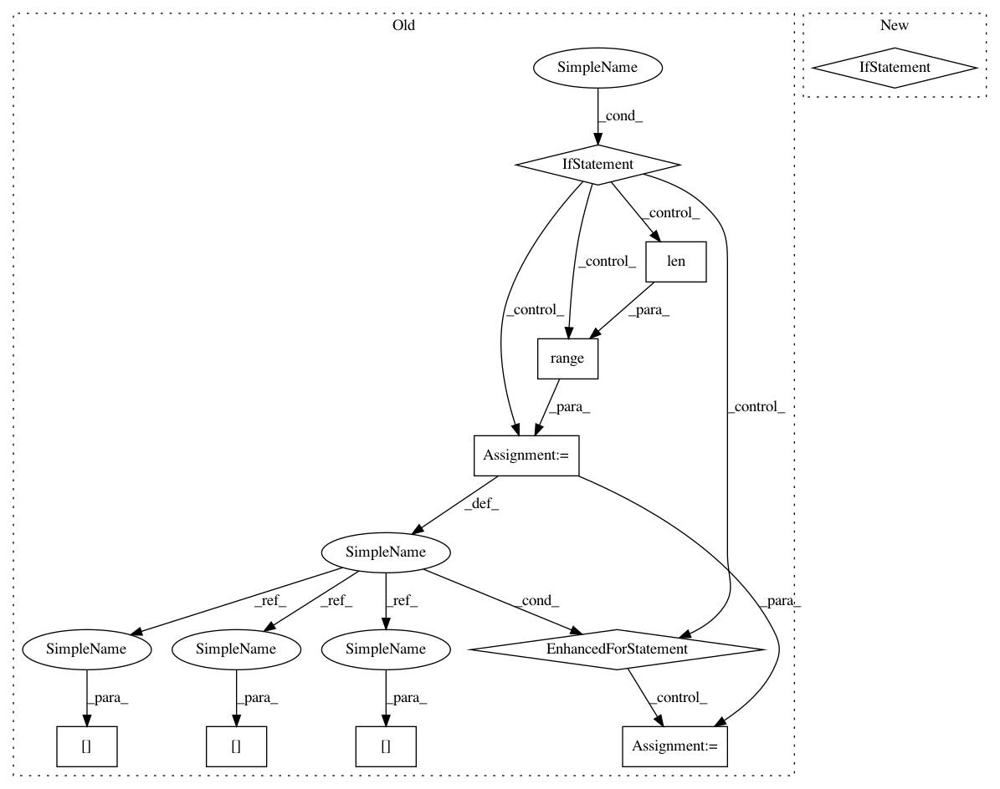

e81142f0869321cd8792e13bfc4f6fb85d9f1efc,libact/query_strategies/uncertainty_sampling.py,UncertaintySampling,make_query,#UncertaintySampling#,62
Before Change
// therefore, total time complexity is O(NK) + O(NK) + O(NK) + O(N) = O(NK)
ask_id = np.argmax(1 - np.max(self.model.predict_real(X_pool), 1))
elif self.method == "sm": // smallest margin
// time complexity analysis:
// O(NK) + O(N)
prob = self.model.predict_real(X_pool)
min_margin = np.inf
for j in range(len(prob)):
m1_id = np.argmax(prob[j])
m2_id = np.argmax(np.delete(prob[j], m1_id))
margin = prob[j][m1_id] - prob[j][m2_id]
if margin < min_margin:
min_margin = margin
ask_id = j
else:
raise ValueError(
"Invalid method "%s" (available choices: ("lc", "sm", "le")"
% self.method
After Change
np.max(np.abs(self.model.predict_real(X_pool)), axis=1)
)
elif self.method == "sm": // smallest margin
dvalue = self.model.predict_real(X_pool)
if np.shape(dvalue)[1] == 2:
ind = [0, 1]
In pattern: SUPERPATTERN
Frequency: 3
Non-data size: 10
Instances
Project Name: ntucllab/libact
Commit Name: e81142f0869321cd8792e13bfc4f6fb85d9f1efc
Time: 2015-12-22
Author: yangarbiter@gmail.com
File Name: libact/query_strategies/uncertainty_sampling.py
Class Name: UncertaintySampling
Method Name: make_query
Project Name: ntucllab/libact
Commit Name: e81142f0869321cd8792e13bfc4f6fb85d9f1efc
Time: 2015-12-22
Author: yangarbiter@gmail.com
File Name: libact/query_strategies/uncertainty_sampling.py
Class Name: UncertaintySampling
Method Name: make_query
Project Name: keras-team/keras
Commit Name: 91efaaa1d7486df71be30a54d82b907443d80bf1
Time: 2019-04-02
Author: bonlimezak@gmail.com
File Name: keras/layers/convolutional.py
Class Name: _Conv
Method Name: compute_output_shape
Project Name: ilastik/ilastik
Commit Name: c3ebe519eb1361056727a9a8fb6269dc53313eb5
Time: 2019-04-04
Author: k-dominik@users.noreply.github.com
File Name: ilastik/applets/dataSelection/dataSelectionGui.py
Class Name: DataSelectionGui
Method Name: getImageFileNamesToOpen